Site Report
Date: 6th April 2022
Initial Commit
The first component of my website was the Homepage (index.html), as this is the page the browser displays. I created the content needed for the page before thinking defining the layout of the page. I used semantic HTML tags such as 'nav' for the navigation bar and 'main' for the pages main content. Then I committed the first version of my code and published my master branch using Visual studio’s source control feature to access Git and GitHub.
CSS Grid Layout – Homepage
I decided to use CSS Grid to create the layout of my page. I used a 5-column grid on the Homepage to position the elements at specified locations, while allocating different widths of space.
Navigation Bar
I created a navigation bar to give users access all the sites pages from one location. As a result of my initial design plan, I decided to place the navigation bar within the site’s header. I also used the image of the university logo as a place holder for a potential logo.
Initial Background
Unsure of the best background to use, I decided to use a background image that resembled a circuit as websites and other software require machines to run them. Therefore, it felt relevant, and I believed it was a reasonable choice. After trying a couple different background, I settled for a white background with grey lines resembling a circuit board.
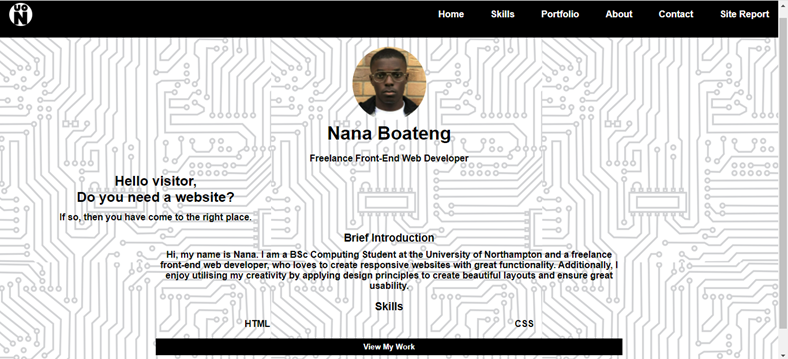New Branch: Portfolio Page (portfolio.html)
Adding a new page can be considered a major update to the site, especially when this new page requires different components, which require additional CSS rules. As a result, I decided to create an additional branch of code to protect the code within my master branch.
Interactive Images: Portfolio
To represent the placeholder websites, I used links and images which the user could click to access each site respectively. Additionally, to improve the sites interactivity I applied CSS rules which manipulate the properties of the links and images to give the user a greater feeling of control by responding to their actions with the mouse.
CSS Grid Layout: Portfolio Page
Like the homepage, I used CSS Grid to create the layout of the portfolio page. I used a 2-column grid to position the title of the page and the thumbnails/links of the placeholder websites at specified locations. To prevent any of the Grid rules of the different pages from clashing, I used CSS grid to create the layout for every page using the 3 main components (header, main, footer). The main tag then contains a specific grid rule which allows the content within the main of each page to possess different layouts by utilising the class properties of the elements within the CSS file.
Portfolio Page: Debugging Grid Cell Expansion Bug
One of the CSS rules I applied to the websites’ thumbnails causes them to expand when the user hovers over them using the mouse pointer. However, I discovered that 2 of the links to placeholder websites would cause other elements on the page to shift position. After inspecting the html and CSS properties of both elements, I concluded it was the CSS rule specifying the grid row height ratio, which created this problem. After commenting out the CSS rule the problem was solved. After completing the Portfolio page within the new branch, I merged the new changes into the master branch, which contains the main code.
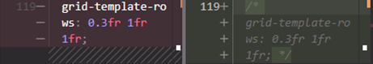New Branch: Contact Form (contact.html)
Again, adding another page which required different components and additional CSS rules would cause my currently functional site to become vulnerable to errors. As a result, I decided to create an additional branch of code to protect the code within my master branch.
CSS Grid Layout: Contact Form
With the form element acting as the container for the content on this page I used CSS grid rules to layout the input fields and labels. Using the “mailto” function, as instructed, I designed the form to open the user’s client mail application once the submit button is selected.
Date: 7th April 2022
New Branch: Blog Page (blog.html)
To protect the functionality of my code I created a separate branch to develop the Blog page.
CSS Grid Layout: Blog
I used a 3-column grid layout to position the title of the page and the thumbnails/links of the various blog articles.
Blog Article
Using CSS grid, I created a 3-column layout for all the blog articles.
Date: 8th April 2022
Dark Theme
I decided to change the light theme of my website, as I personally prefer dark themed apps and sites. They are especially beneficial in dark environments.
New Branch: Animation – Shooting Stars Background
When deciding where to use animation, I thought of 3 options: background animation, profile picture animation, and animated text. After setting up a poll on social media for my friends to vote, I listened to the majority and decided on the background animation. To decide which animation I would use in the background, I begun experimenting with a few ideas. Finally, I settled for a change in the background colour gradient, once the user hovers over the site’s body, and some objects which move diagonally, in one direction, across the screen. This animation is intended to emulate a simplistic version of shooting stars in empty space, as well as portray my current skillset which also possesses empty space for new skills and further growth.
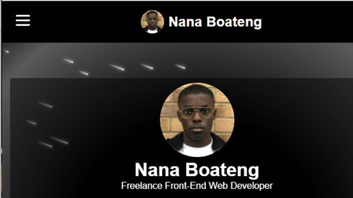Resolving Merge Conflict: Blog and Background Animation
Before developing the background animation branch, I had yet to merge the blog branch into the master branch. As a result, when I merged to 2 branches consecutively, Visual Studio flagged some conflicting code. It was quite easy to resolve as I simply authorised both changes, since they were necessary.
Date: 10th April 2022
Comments: Planning Further Development
After reading through the CSS rules applied to the desktop version of the website, I decided to leave comments proposing changes to the CSS rules which would suit a mobile display for the website. This made it much easier when writing the CSS rules for the mobile view, as I had a clear direction and an expected outcome.
Date: 11th April 2022
Mobile Optimisation: Percentage Measurements
I changed some measurement values for grid gaps and widths for a few elements, which would need to remain proportional in size to the device screen.
Date: 12th April 2022
Mobile Optimisation: Navigation Bar
Using CSS rules in the mobile.css script, I created a mobile menu which is hidden initially until the user toggles its display state using the hamburger icon. I moved the nav bar outside of the header to achieve the desired effect which resulted in a change within the desktop display.
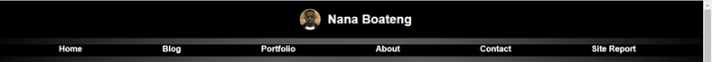GitHub: Host Live Site
I hosted my site on GitHub to view it from my phone and to see how it is rendered when live.
Mobile Optimisation: Debugging
I noticed that the stars on the homepage were causing characters in the main to shift by expanding the grid, after using chrome’s inspect element function. I moved the stars out of the main container, which solved the problem.
Date: 16th April 2022
About Page
As the About page contains only text and the content of the main do not require user interaction, it was highly unlikely that developing the page in the master branch would generate errors. Therefore, I did not create a dedicated branch for this page.
Date: 17th April 2022
Screenshots of HTML and CSS validation reports
index.html:
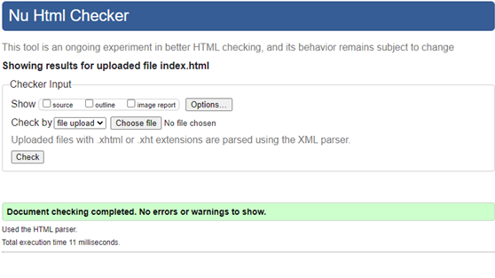blog.html
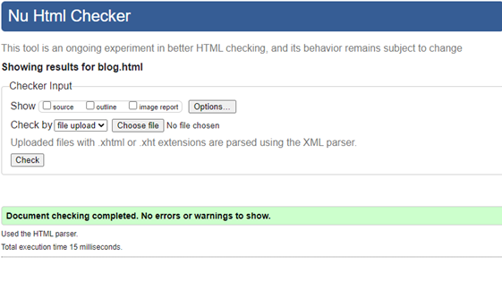portfolio.html:
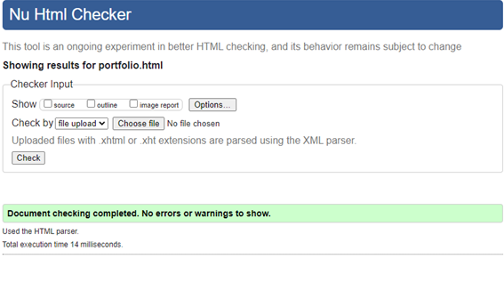about.html:
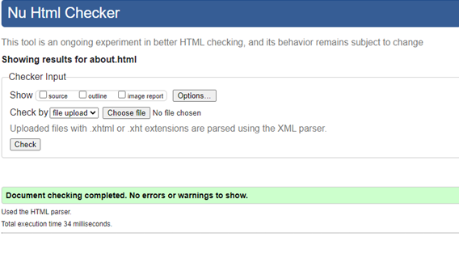contact.html:
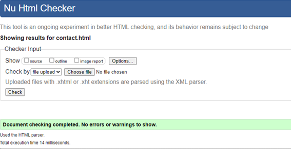site-report.html:
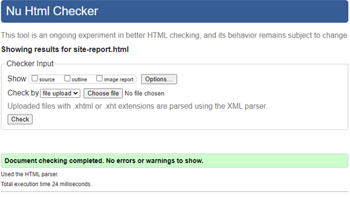CSS scripts:
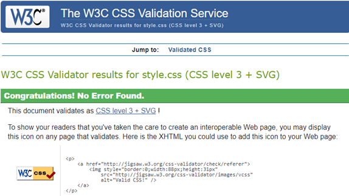Site Report Completed.